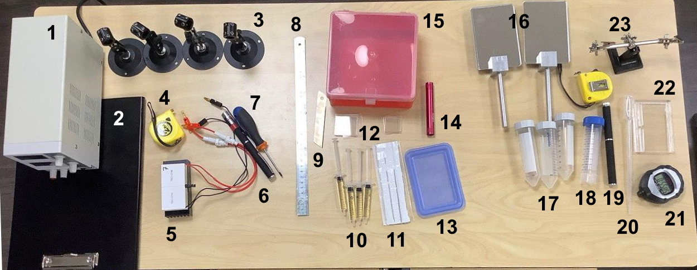
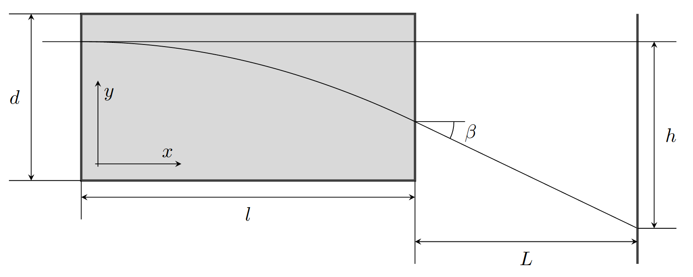
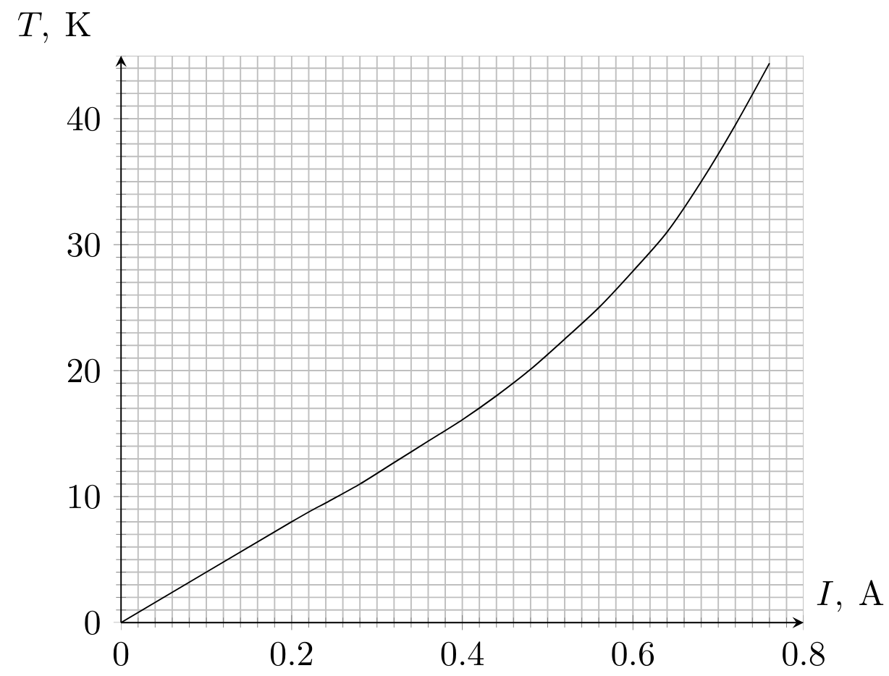
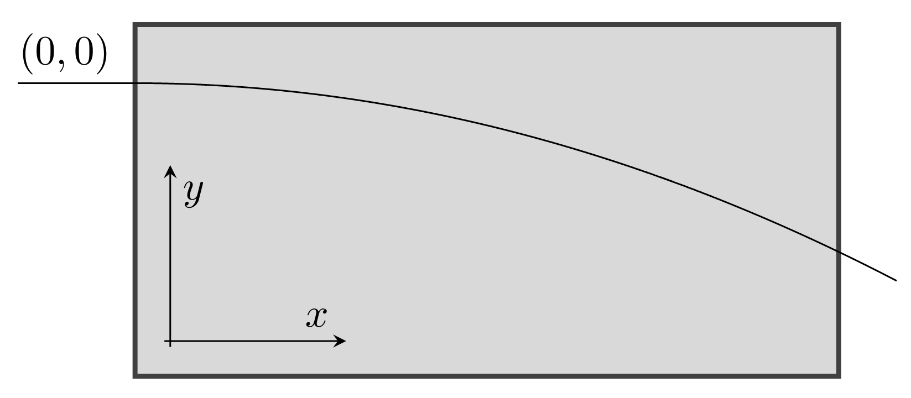
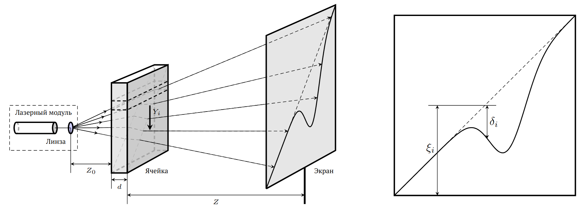
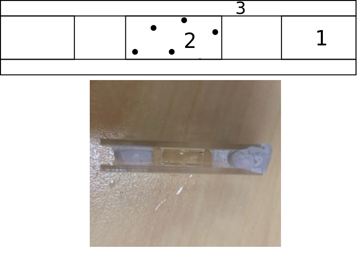

Y20 (2020) — English translation
Gradient optics is a branch of optics that studies the optical properties of materials whose refractive index varies depending on coordinates. An example of gradient optics is the mirage of a puddle on the road on a hot day. In reality, the puddle is an image of the sky on the road, since the rays of light are refracted (bent) from their normal straight path. This occurs due to a change in refractive index between the warm, less dense air near the road surface and the denser, colder air above it. Another well-known example is optical fiber, in which light propagates according to a harmonic law depending on the longitudinal coordinate. The experimental problem we present to you consists of three independent parts, which, however, have common equipment. In each part you will need to create gradients of refractive index in a substance and examine them.

1. Power supply 2. Screen 3. 4 holders 4. Tape measure 5. “Sandwich” 6. Red laser (dot) 7. Screwdriver (to adjust the fastening of the holders) 8. Ruler 9. Knife blade 10. Syringes with jelly 11. Adhesive mass 12. Transparent plates 13. Cover on which to cut jelly 14. Flashlight 15. Vessel with water 16. Pair of mirrors 17. Test tubes with salt solutions 18. Test tube with distilled water 19. Red laser (line) 20. Pipette 21. Stopwatch 22. Cuvette 23. Stand for cuvette
\emph{Equipment used in this part:} power supply (1), screen (2), laser holder (3), tape measure (4), sandwich (5), laser (6), screwdriver (7), ruler (8), pair of mirrors (16).
The refractive index of a material depends on temperature as follows: $$ n(T)=n_0 + \alpha (T-T_0), $$ где будем считать $T_0$ — комнатной температурой, $n_0$ — показателем преломления при комнатной температуре, а $\alpha$ — температурным коэффициентом показателя преломления. Оргстекло (плексиглас) обладает сравнительно большим температурным коэффициентом показателя преломления, поэтому на имеющемся оборудовании можно наблюдать эффекты, связанные с измерением показателя преломления вдоль одной из осей.
Нагревая оргстекло с двух сторон, можно создать градиент температуры внутри оргстекла. В установившемся режиме можно с хорошей точностью считать, что температура линейно изменяется вдоль оси $y$. The beam path is shown in the figure below. When solving a problem, use the notation shown in the figure.

Plexiglas for the experiment is placed between two pairs of Peltier elements. The Peltier element creates a temperature difference between its two flat surfaces. In the assembled “sandwich”, when the voltage source is correctly connected, the side with the radiator cools the surface of the plexiglass to which it is glued. The opposite side (without a radiator) heats the surface of the plexiglass accordingly. When plexiglass is heated above $70~{}^\circ\mathrm{C}$, irreversible changes occur in its structure. Therefore, fuses with a rating of $0.75~\mathrm{А}$ are built into the wires going to the Peltier elements. Do not exceed $0.75~\mathrm{А}$ current through Peltier elements. When connecting the upper and lower pairs of Peltier elements in parallel, the source readings should not exceed $1.5~\mathrm{А}$, respectively. \emph{If you blow a fuse, your points for this item will be cancelled.} For the assembled “sandwiches”, below is a graph of the temperature difference between the plexiglass surfaces versus the current flowing through each pair of Peltier elements. The characteristic time for establishing a stationary temperature distribution for “sandwiches” is about 3 minutes.

Pay attention to the side surface of the plexiglass. The short sides are much better polished than the long sides. Therefore, use the short sides to study the effect. If necessary, you can use a pair of mirrors to increase the distances at which you observe the effect.
To process the data, you may need an equation for the trajectory of the ray in the volume of plexiglass. Assuming that the refractive index depends on $y$ as follows $n(y)=n(0)-ky$, the trajectory coordinates are related as follows: $$ x=\cfrac{n(0)}{k}\ln\left(1-\cfrac{ky}{n(0)}+\sqrt{\left(1-\cfrac{ky}{n(0)}\right)^2-1}\right). $$ The directions of the axes are shown in the figure.

In this part of the problem, we will study the gradient formed at the boundary of two solutions - a concentrated salt solution and distilled water. The refractive index of a liquid depends on the salt concentration. Thus, it is possible to study the diffusion process by the optical method by measuring the deviation of the laser beam from linear propagation. This part of the problem does not require error estimation.
\emph{Equipment used in this part of the task:} screen (2), laser holder (3), tape measure (4), screwdriver (7), ruler (8), test tubes with salt solutions (17), test tube with water (18), red laser line (19), pipette (20), stopwatch (21), cuvette (22), cuvette stand (23), bucket (24).
The installation diagram for this part of the problem is shown in the figure.

To determine the function of the dependence of the refractive index gradient on the coordinate (vertical), you need to obtain a correspondence between the coordinate on the screen $\xi_i$ and the coordinate $Y_i$ in the cuvette, and you also need to obtain a correspondence between the vertical deviation $\delta$ and the local gradient of the refractive index $dn/dY$. From the installation geometry, $Y_i=\cfrac{\xi_i Z_0}{Z_0+d+Z}$ can be obtained. It can also be shown that $\left(\cfrac{dn}{dY}\right)_i=\cfrac{\delta_i}{Zd}$ is true.
Assemble the installation according to the diagram above. For this part of the task, you need to use a red laser, which produces an image in the form of a straight line. Depending on the distances you are working at, you may need to focus the laser beam. This is done by rotating the front lens. Achieve the minimum line thickness for your installation. Place an empty cuvette in the path of the laser beam. You should get an image of a slanted line on the screen. Pour the salt solution into the cuvette. Pour it up to the level of the first divider. Pour the salt solution into the wide part of the cuvette carefully, along the side wall. Then pour in distilled water. Pour water drop by drop into the narrow part of the cuvette. The laser beam should deflect on the screen after passing the interface. Record the time during which the diffusion process takes place. The dip needs to be observed on the screen in the center in order to sketch the picture in the future.
After 30 minutes, trace the laser beam on graph paper that is attached to the screen. The experiment must be performed for three salt concentrations. Label what concentration each leaf corresponds to. Conical test tubes contain salt solutions of the following concentrations: $C_1=153~\text{г/л}$, $С_2=187~\text{г/л}$, $C_3=220~\text{г/л}$.
The curves obtained in B3 can be described by the following equations: $$ \left(\cfrac{dn}{dY}\right)_i=\left(\cfrac{dn}{dC}\right)~\left(\cfrac{dC}{dY}\right)_i\quad\quad\quad\quad \left(\cfrac{dC}{dY}\right)_i=\cfrac{C_0}{2\sqrt{\pi Dt}}~\exp\left(-\cfrac{(h-Y_i)^2}{4Dt}\right), $$ где $C$ — концентрация соли в растворе, $C_0$ — начальная концентрация соли в растворе, $D$ — коэффициент диффузии, $t$ — время диффузии, $h$ — значение $Y_i$ для максимального значения градиента показателя преломления $dn/dY$. Заметим, что $dn/dC$ - constant.
Equipment used in this part of the task: screen (2), flashlight holder (3), tape measure (4), screwdriver (7), ruler (8), knife blade (9), syringes with jelly (10), adhesive mass (11), transparent plates (12), jelly cutting lid (13), flashlight (14), vessel with water (15).
Lenses with variable refractive index are currently used in centimeter radio wave technology. For the optical range of electromagnetic waves, it is quite difficult to produce such a lens that could withstand competition with conventional ones. However, the outstanding American experimental physicist Robert Wood, many years before the first radar stations appeared and, therefore, the widespread use of centimeter radio waves began, proposed a simple model of an optical lens with a variable refractive index, which he called a pseudolens. Today you will make this pseudo lens from gelatin. The main idea is as follows. The syringes are filled with jelly prepared on the basis of gelatin and glycerin. By placing a gelatin cylinder in clean water, the process of water diffusion into the cylinder and glycerin out begins. Because The refractive indices of glycerin and water are different, after soaking in the cylinder, a variable refractive index is formed.
The sequence of actions for making a pseudolens is as follows: 1. Squeeze part of the gelatin cylinder out of the syringe and cut a piece of the length you need. 2. Place the cylinder between two transparent plates. Be careful not to deform the cylinder. If necessary, you can place adhesive in the corners of the plates to prevent the plates from moving apart. In the picture below: 1 - adhesive mass, 2 - gelatin cylinder, 3 - plates. 3. Place the cylinder with plates in a vessel with water at $t=(13.0\pm0.5)~\text{мин}$. 4. Remove the cylinder from the water. He is ready for measurements.

We can assume that for a pseudolens of radius $R$ the optical paths from the source at infinity to the focus are equal for rays passing through the center and through the edge of the lens.
Source: https://pho.rs/p/41